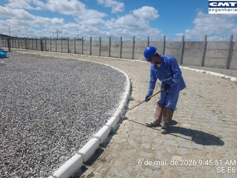
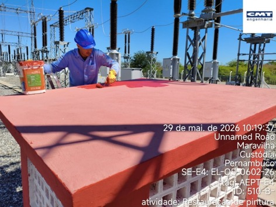
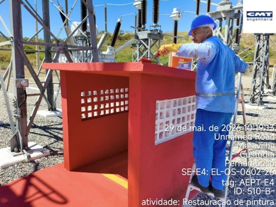
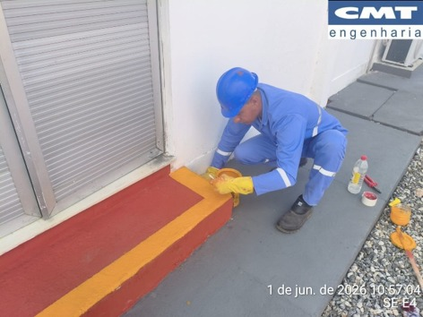
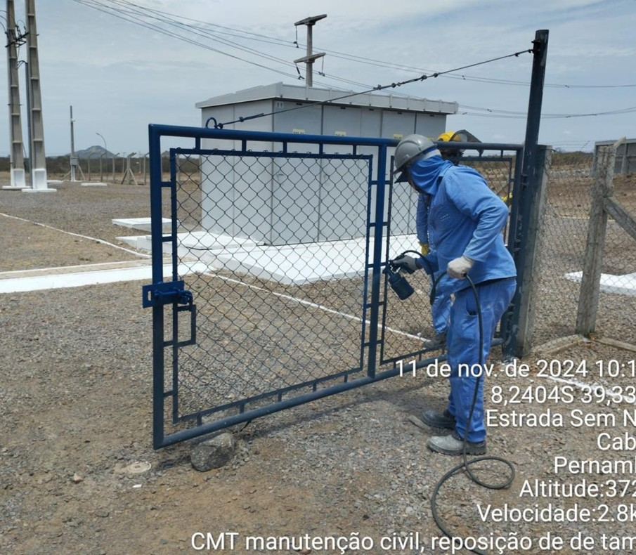
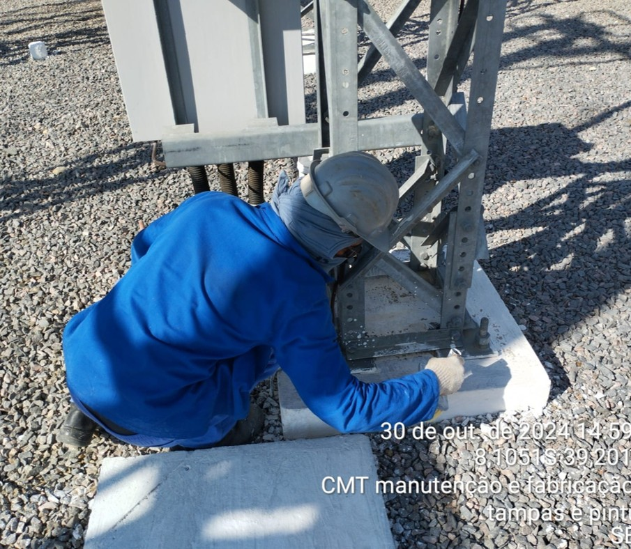
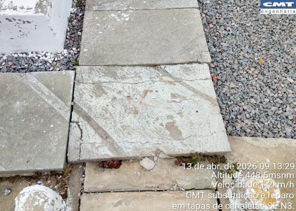
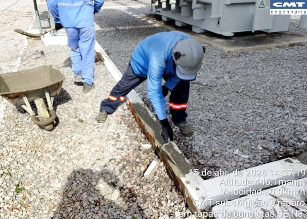

Revitalização das estruturas


Execução

meios-fios

meios-fios

cabanas de extintores

cabanas de extintores

cubículo de média tensão

cubículo de média tensão

degraus

rampas

portões de acesso

portões de acesso


Meio-fio e canaleta



